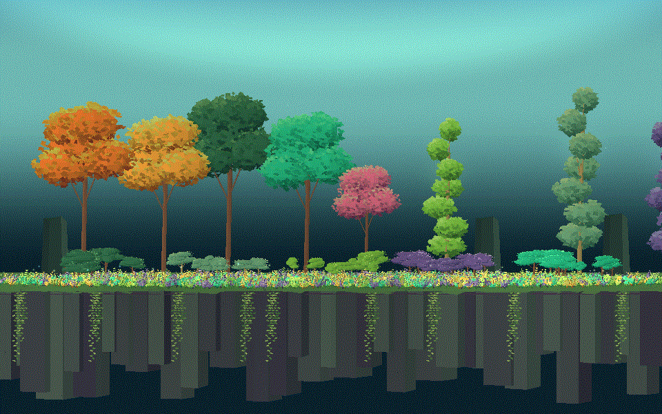
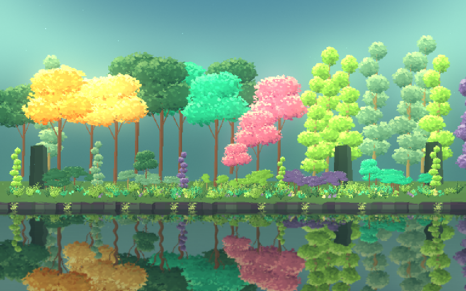

Tracefolio REPORTS & ISSUES
Tracefolio REPORTS & ISSUES몽환적인 숲 보완 — 강물 반사·밝은 수관·풍성한 수목
완료참고 하단을 강물로 정정하고 실제 평면 반사·부드러운 Bloom·밝은 청록 하늘을 추가했습니다. 나무는8→30그루로 늘리고 하층의 밝은 점 과밀을 줄여 실제 Unity에서 재촬영했습니다.
작업 결과
사용자 정정에 따라 앞쪽 절벽이 강조되던 구성을 강물·반사로 바꾸고, 몽환적인 밝은 수관과 청록 하늘·빛 번짐을 구현했습니다. 기존의 어두운 결과는 필요한 수면·조명 표현을 누락한 상태였으며, 이번 실제 Unity 렌더에서 새 표현을 확인했습니다. 원본과 픽셀 단위로 동일하게 재현했다는 판정은 아닙니다.
변경 내용
적용 내용

이전에는 드러난 절벽, 어두운 하늘과8그루의 분리된 수목이 중심이었고 수면 반사가 없었습니다.
강물의 실제 장면 반사·잔물결, 밝아진 청록 하늘, 부드러운 카메라 Bloom을 추가했습니다. 수목은8가지 색상30그루를 여러 깊이에 배치했습니다. 고사리는840→160개로 줄이고 크기·색을 조정했으며 꽃은380→72군락으로 줄였습니다. 관목45개와 덩굴9묶음은 유지했습니다. 잎 방향과 그늘 색을 수정해 상단의 빛이 더 드러나도록 했습니다.

앞1.92초는 이전 숲, 다음1.92초는 수정한 숲입니다.960×600 출력은 동일하나 강물이 화면 아래를 채우도록 카메라를7도·y7에서11도·y8.8로 조정했습니다. 동일 카메라 위치의 비교라고 주장하지 않습니다.

샘플 Bloom 다음에 선택 Pixel Camera360p를 적용합니다. 이 조명·반사 샘플은 Built-in 전용이며 외부 후처리 패키지를 설치하지 않습니다.
검증
실제 Unity6000.0.83f1·Windows DX11·Built-in에서 두 씬을 Play·촬영했습니다. 현재 Runtime·샘플·선택 Camera 샘플104개 소스가 격리 QA와 SHA-256으로 일치하고, 각24개 서로 다른 PNG를 확보했습니다. Native 로그에서 Shader/C# 오류·NullReference·MissingReference 메시지가 검출되지 않았습니다.12개 셰이더 진입점의 실제 Unity 헤더/D3DCompile 정적 컴파일과12개 자산·언어·의존성 검사,5개 씬/기존파일 보존 검사도 통과했습니다. 기존 샘플·metadata62개와 프로젝트 설정은 유지했습니다.
네이티브 검증 · 기본 씬 실행 · Camera 실행 · 셰이더 검사 · ScreenToGif 인코더/GIF 해시 · 초기 흰 화면과 재검증 이력
설치 ScreenToGif 인코더의 공개 API로 원본 PNG를 묶었으며 이미지 재그리기·외부 리사이즈는 하지 않았습니다. GIF는48프레임이며 색상 판단에는 PNG를 우선합니다. 수정된 예제와 효과를 포함한 통합·식생 검토 패키지도 생성 후 실제 archive와 현재 소스/metadata를 다시 대조했습니다. 검토 패키지 해시.
교훈 검토: 사용자가 정정한 수면 해석을 반영했고, 정적 컴파일만으로 후처리 화면을 통과시키지 않았습니다. 실제 빈 화면을 발견·수정·재촬영했습니다. 기존 전역 검증 원칙과 중복되어 전역 지침 추가는 없으며 샘플 범위·Built-in 제한은 프로젝트 문서에 기록했습니다.
남은 사항
원본과 동일한 수형·수채화 같은 질감·색감까지 완전히 재현했다고 주장하지 않습니다. 현재는 사용자 정정의 강물·반사·밝은 빛·수목 밀도를 반영한 실제 결과입니다.
새 수면 반사와 Bloom은 샘플 전용 Built-in 구현입니다. URP 동등 효과·XR·모바일·기기별 프레임률은 미검증입니다. 반사는 기본512픽셀·12Hz로 별도 장면 렌더를 추가하며 Bloom도 추가 처리 비용이 있으므로 성능 개선 기능으로 안내하지 않습니다. Pixel Camera 자체의 source 재사용 기록과 수면 반사 비용은 구분해야 합니다.
새 샘플 컴포넌트 Inspector의9언어·공유 UI 마무리와 전체 출시 검증은 기존 제품 작업으로 남아 있습니다.9언어 가이드는 새 효과와 제한을 반영했습니다. 정지 화면은 세부 검증을 위해 원본을 보존해200KB 목표를 넘으며 전후 GIF는약11.4MB입니다. 원본/실패 촬영은 덮어쓰지 않았습니다.
작업 시간
- 제안 시간: 구현·실제 렌더 보완15~25분
- 실제로 완료된 시간: 2026-11-04 04:12:45 KST 계측 시작. 최종 두 씬 촬영04:24:30 KST(11분45초). 이후 문서·패키지/프레임 검증·공개 보고서 배포를 추가 진행.
- XERJ: 사용 — XERJ 연결 및 OnRenderImage 검색 확인. 관련 샘플 Runtime·Python·셰이더는 인덱스 밖이어서 현재 소스와 실제 Unity 실행으로 검증했습니다.